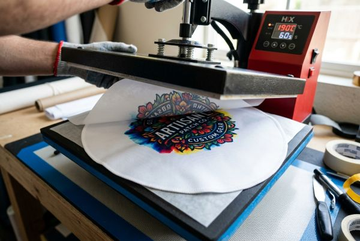

Printed Sublimation Patches: Unlimited Color Possibilities
Unlock complete creative freedom with custom printed sublimation patches. Perfect for complex artwork, photo-realistic portraits, multi-color gradients, and fine text, dye-sublimation patches deliver vibrant imagery with zero color limits and permanent durability.

When designing custom patches for a brand, team, or creative merchandise line, you may run into a frustrating limitation: traditional embroidery and woven stitching cannot always recreate delicate color gradients, photo portraits, or micro-scale lettering. This is precisely where printed sublimation patches shine. By infusing specialized dyes directly into high-density polyester fibers under high heat and pressure, dye-sublimation technology removes every color restriction while preserving razor-sharp detail.
In this comprehensive guide, we will break down how dye-sublimation patch printing works, evaluate its major advantages, compare it directly against traditional patch manufacturing styles, and share practical design tips to ensure your printed patches look flawless.
What Are Printed Sublimation Patches?
Printed sublimation patches (also widely known as dye-sublimated patches or full-color printed patches) utilize a high-precision chemical transfer process known as dye-sublimation printing. Unlike traditional screen printing—where liquid ink rests on top of fabric—dye sublimation uses heat-sensitive inks printed onto a specialty transfer paper.
During the thermal pressing phase at temperatures exceeding 380°F (190°C), the solid dye converts directly into a gas without passing through a liquid state. The gas penetrates deep into the synthetic polymer fibers of the patch material, bonding permanently at the molecular level. Once cooled, the dye solidifies inside the fabric threads rather than sitting on top.

Key Advantages of Printed Sublimation Patches
Why are modern apparel brands, esports organizations, and artwork creators increasingly turning to printed patches? Here are the core benefits that set dye sublimation apart:
1. Unlimited Colors & Smooth Gradients
Traditional embroidery restricts designs to 9–12 thread colors, with each additional shade increasing digitizing costs. Sublimation printing, on the other hand, operates on a full CMYK spectrum. You can incorporate subtle color fades, metallic glows, shadow effects, and thousands of distinct shades without any extra color charge.
2. Photo-Realistic Detail & Tiny Text
Because there are no physical threads creating bulk, printed patches can render line weights as thin as 0.1 mm. Detailed digital illustrations, photographic artwork, watercolor paintings, and tiny sub-text that would bunch up in standard embroidery stay crisp and easily readable.
3. Fade-Proof & Wash-Durable Performance
Since the dye is chemically bonded inside the polyester fibers, printed patches will not crack, peel, fade, or wash out over time. They withstand industrial laundering, UV radiation, and heavy outdoor exposure seamlessly.
4. Lightweight & Low Profile
Heavy 100% embroidered patches can sometimes weigh down lightweight garments like performance t-shirts, cycling jerseys, or summer caps. Sublimation patches maintain a smooth, soft, and flexible hand-feel that drapes naturally without stiff bulges.
5. Full Bleed & Edge-to-Edge Printability
Sublimation allows full-bleed printing right up to the very outer edge of the patch. You can pair this flat artwork with laser-cut borders or classic merrowed stitched borders for added contrast.
Sublimation vs. Embroidered vs. Woven Patches
To help you select the exact right patch type for your custom project, here is how dye-sublimated patches stack up against embroidered patches and woven patches:
| Feature | Printed Sublimation | Woven Patches | Embroidered Patches |
|---|---|---|---|
| Detail Level | Photorealistic (300+ DPI) | High (Fine threads) | Medium (Standard thread thickness) |
| Color Limit | Unlimited (CMYK / Gradients) | Up to 12 colors | Up to 12 colors |
| Surface Texture | Smooth & flat fabric | Flat, fine woven texture | Raised, 3D stitched texture |
| Minimum Text Size | Ultra-small (down to 2pt) | Small (down to 4pt) | Medium (at least 6pt-8pt) |
| Weight & Thickness | Thin & lightweight | Light to medium | Thick & structured |
| Best For | Gradients, photos, complex art | Detailed logos, sleek look | Classic uniforms, bold logos |
Looking for the direct product page?
Explore custom options, order minimums, and pricing on our official Printed Patches Product Page.
Combination Patches: Sublimation Print + Embroidery Borders
Do you love the photo-detail capability of dye sublimation but still want the 3D raised border texture of classic embroidery? You don't have to compromise! Combination patches merge both techniques into a single premium emblem:
- Center Graphics: Printed using dye sublimation for unlimited color gradients and intricate detail.
- Outer Border & Accents: Stitched with raised 3D embroidery threads (such as a merrowed edge or targeted embroidered text highlights).
This hybrid approach delivers a striking visual contrast that elevates fashion branding and luxury club merchandise.
Backing and Attachment Options for Printed Patches
Just like standard emblems, printed sublimation patches can be equipped with various backing options tailored to your specific application method:
Sew-On (No Backing)
The timeless choice for permanent garment attachment. Sew-on backings leave the patch soft and flexible, ideal for athletic jackets, jeans, and uniforms.
Iron-On (Heat-Seal)
Coated with a heat-sensitive glue backing. Apply effortlessly with a heat press or household iron at 320°F (160°C) for 15-20 seconds. Great for retail merchandise and DIY projects.
Velcro (Hook & Loop)
Features male hook Velcro backing stitched around the perimeter. Includes a matching female loop piece for tactical caps, military gear, backpacks, and uniform sleeves where quick patch swapping is required.
Peel & Stick (Self-Adhesive)
Uses heavy-duty 3M pressure-sensitive adhesive. Ideal for single-day conventions, trade show name tags, hat placement testing, or hard non-fabric surfaces.
Ideal Applications for Printed Patches
Dye-sublimation patches are highly versatile across numerous industries. Here are the most popular use cases:
- Digital Artists & Illustrator Merch: Easily turn digital paintings, anime characters, and intricate illustrations into wearable patch art.
- Esports & Gaming Teams: Complex team logos with neon glows, chrome gradients, and intricate mascots translate effortlessly.
- Commemorative & Photo Patches: Recreate real photographic portraits, historical images, or event photographs on fabric.
- Corporate Identity & Multi-Color Logos: Perfect for brands with brand guidelines featuring gradient logos that cannot be altered to flat colors.
- Outdoor & Adventure Badges: Landscape illustrations showing sunset sky gradients, mountains, and wildlife in vivid detail.
Step-by-Step Design Guidelines for Printed Sublimation Patches
Follow these essential design guidelines to ensure your artwork prints with optimal clarity and color accuracy:
- Provide High-Resolution Files: Submit artwork at 300 DPI or higher at actual print size. Vector formats (.AI, .EPS, .PDF, .SVG) yield the sharpest lines, but high-res raster files (.PNG, .PSD) work great for photo printing.
- Set CMYK Color Profile: Sublimation printers use CMYK inks. Designing in CMYK prevents unexpected color shifts when converting from RGB screen displays.
- Include Bleed Margins: Add a 2 mm to 3 mm background bleed extending past your cut line to ensure full edge-to-edge print coverage without white slivers.
- Border Selection: Decide between a traditional merrowed stitched border (overlock edge) or a clean heat-cut / laser-cut border.
Frequently Asked Questions (FAQ)
Q1: Will printed sublimation patches fade after repeated machine washing?
No. Because dye-sublimation gas bonds inside the polyester fibers at the molecular level, the colors will not wash out, peel, or crack under normal laundering conditions.
Q2: Can I combine embroidery threads with printed sublimation artwork?
Yes! We frequently produce combination patches where center graphics are dye-sublimated and borders or select lettering are raised with 3D embroidery threads.
Q3: What is the minimum line weight for text on printed patches?
Printed patches can handle text as thin as 0.5pt to 1pt (approx 0.1mm-0.2mm). However, for maximum legibility from a distance, we recommend keeping text height above 2mm.
Q4: Are printed patches suitable for outdoor tactical gear?
Absolutley. When backed with Velcro or heavy-duty sew-on backings, printed sublimation patches hold up extremely well against moisture, dirt, and sunlight exposure.
Q5: Is there a minimum order quantity (MOQ) for custom printed patches?
At ChinaPatchFactory, we offer factory-direct manufacturing with no minimum order quantity! Whether you need a single custom proof or 10,000 pieces, we've got you covered.
Conclusion
Printed sublimation patches remove the boundaries of conventional thread embroidery, offering unlimited color gradients, photographic precision, and a smooth lightweight feel. Whether you're bringing complex digital artwork to life or creating corporate emblems with gradient logos, dye-sublimation provides a durable, professional, and visually stunning solution.
Ready to bring your patch designs to life? Our team at ChinaPatchFactory provides 12-hour free digital proofs, expert digitizing advice, and factory-direct pricing.
Ready to Create Your Printed Sublimation Patches?
Get a free quote and digital proof within 12 hours. No minimum order required!
Get Free Quote